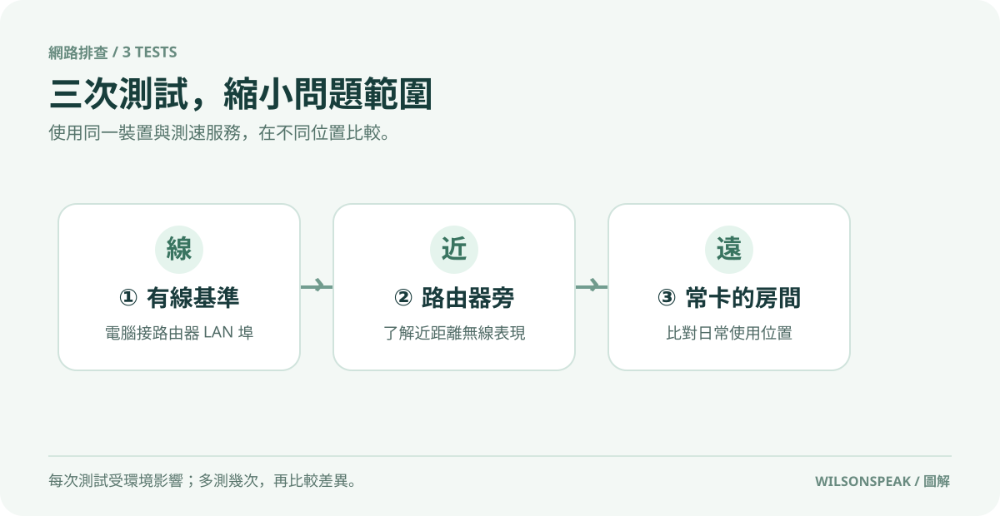

申辦 1G 網路，Wi-Fi 還是慢？先做這 3 次測試
影片封面：Wilson說給你聽；點圖前往 YouTube。
釐清瓶頸：從有線基準到無線實測
許多用戶在升級至 1Gbps 高速寬頻後，發現 Wi-Fi 速度依然未達預期，第一反應往往是更換更昂貴的路由器。然而，盲目投資硬體並非解決之道。要精準定位網路瓶頸，必須透過系統性的測試，區分是「頻寬不足」還是「訊號衰減」。建議先建立一個有線基準值，將電腦直接連接至主路由器的 LAN 埠進行測速。這一步驟可作為比較下行速度的參考，同時排除無線傳輸本身的干擾與損耗。若連線測試結果已低於合約規格，也可能與網卡、網路線、路由器、測速伺服器或外部線路有關，需進一步交叉測試。

三階段測試法：定位訊號衰減點
建立有線基準後，接著進行室內無線測試。第二個測試點應位於主路由器正旁，選在訊號良好的附近。此處測得的速度可作為近距離無線測試結果，用於評估無線網卡與路由器的協作效率。若此處速度顯著低於有線基準，可能涉及設備本身的無線規格限制或驅動程式問題。
第三個測試點則需回到日常使用、感覺最卡的房間。此處的數據才是真正反映用戶體驗的關鍵。比較第二與第三測試點的數值落差，可觀察不同位置的實際測速差異，但無法單憑測速確定衰減原因。若落差過大，可以優先嘗試調整擺位，再評估是否需要擴展網路。
Mesh 系統擺放與回程設定關鍵
對於採用 Mesh 分散式網路系統的用戶，節點的擺放位置至關重要。Mesh 系統並非將節點隨意放置即可發揮效能，其核心在於「回程（Backhaul）」的品質。若使用無線回程，副節點必須位於主節點訊號良好且穩定的區域，才能有效轉發數據。常見錯誤是將副節點放在訊號已經極弱的角落，導致整體網路品質被最弱環節拖累。
此外，設定上需留意頻寬與頻道的選擇。較高的頻寬（如 160MHz）能提升理論速度，但可能增加干擾機率；而自動頻道選擇功能在複雜環境中未必總是最佳解。建議定期檢查路由器管理介面，確認各節點間的連線狀態是否穩定，並避免將 Mesh 節點放置在金屬櫃體或微波爐等具干擾源的附近。
高頻寬不等於低延遲：解析卡頓原因
即使測速顯示速度高達數百 Mbps，使用者仍可能感到網頁載入緩慢或遊戲延遲高。這涉及「頻寬」與「延遲（Latency）」的差異。頻寬決定數據傳輸的容量，而延遲影響響應速度。當網路擁塞、路由器處理負荷過重，或 Wi-Fi 干擾嚴重時，即使頻寬充足，封包丟失率上升也會導致體驗卡頓。
此時，單純追求更高頻寬無濟於事。應優先檢查是否有大量背景下載佔用頻寬，或嘗試重啟路由器以釋放記憶體。若問題持續，需考慮網路環境中的干擾源，並確認路由器韌體是否為最新版本，以確保最佳化效能。
總結與常見問題
Q：測速結果不穩定怎麼辦？ A：請確保測試時關閉其他佔用頻寬的應用程式，並確認 Wi-Fi 連線頻率（2.4GHz 或 5GHz）正確。可比較不同頻段在實際位置的表現；5 GHz 與 2.4 GHz 的覆蓋和干擾狀況有所不同。
Q：需要更換路由器嗎？ A：僅在確認有線測試正常、且無線測試在最佳位置仍無法滿足需求時，才考慮升級硬體。優先檢查擺位與 Mesh 節點配置，可能有幫助。
透過這三階段測試，你能明確知道錢該花在哪裡。是修正擺位、調整設定，還是真的需要更強大的設備？釐清瓶頸，才能有效改善網路體驗。
參考影片：家裡辦了1G網路，Wi-Fi為什麼還是慢？先做這3次測試。文章依影片公開資訊整理，以本機 Ollama 撰寫並經編輯校對。